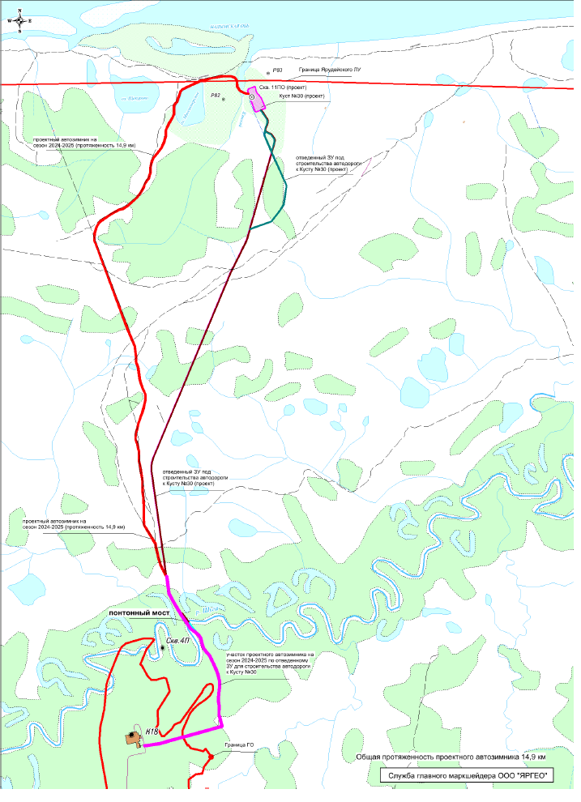
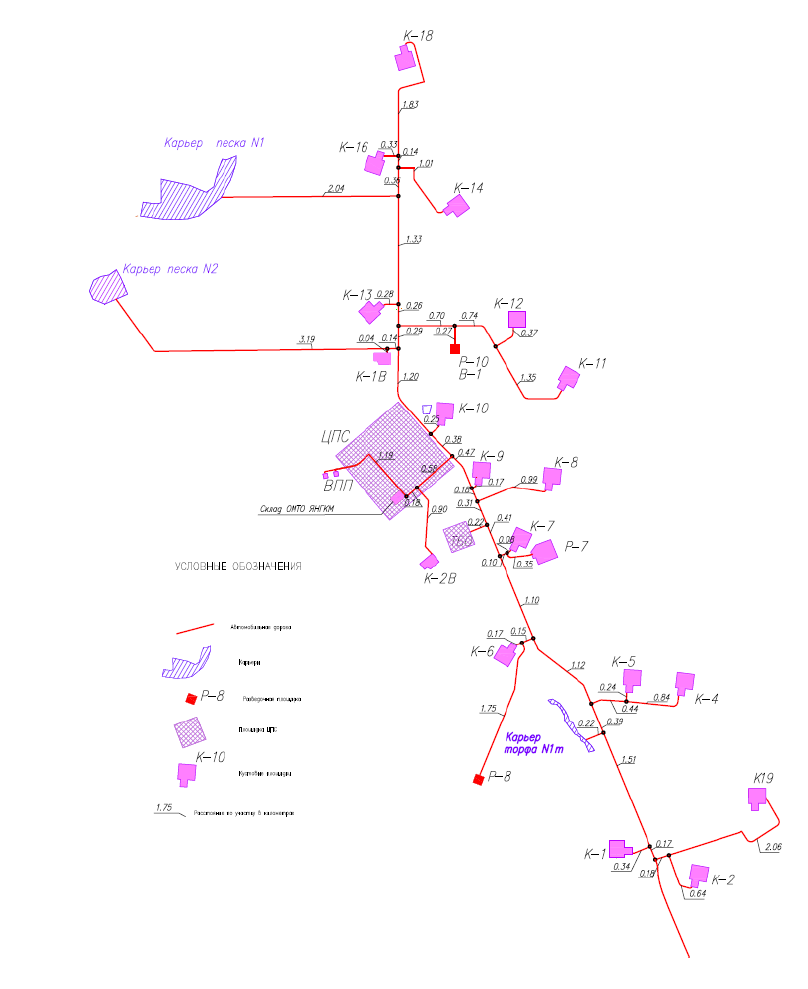
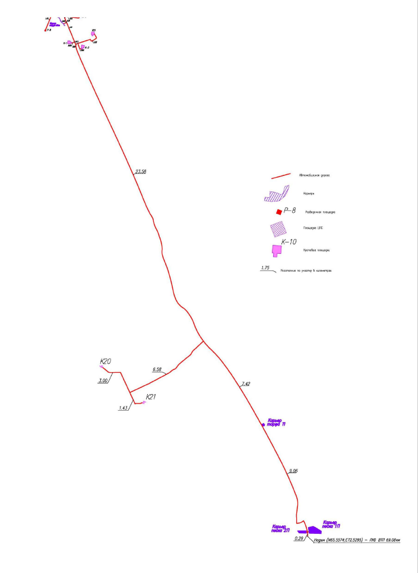

Северо-Ярудейское · Общая информация
Стартовый паспорт проекта собран по исходной таблице общих сведений. Здесь вынесены параметры строительства эксплуатационных скважин, базовые проектные ограничения, дорожная логистика и обеспечение площадки ресурсами.
Паспорт строительства
Тип скважины: эксплуатационная.
Вид строительства: новое строительство.
Организация работ: генеральный подряд.
Район работ: Россия, Тюменская область, ЯНАО, Надымский район.
Участок: Северо-Ярудейский ЛУ.
Начало работ: май 2026 г.
Ключевые проектные параметры
Фонд скважин: № 301, 302, 303, 304, 305, 306, 307, 308.
Проектная глубина по AO: см. раздел 6 ТЗ.
Тип заканчивания: фильтр-хвостовик с МСП РП.
Станция ГТИ: на все время строительства скважин.
Коммерческая скорость: скв. 302-308 не менее 4500 м/ст.мес.; скв. 301 не менее 2150 м/ст.мес.
Логистика И Обеспечение
Access and site support
Подъездные дороги
Маршрут 1: г. Надым - Ярудейское НГКМ: грунтовая федеральная дорога 69,1 км, вдольтрассовый проезд 40,4 км. Ориентировочные периоды снятия понтонно-мостовой переправы через р. Ярудей: май-июнь (2-3 недели), сентябрь (2 недели).
Маршрут 2: Ярудейское НГКМ: грунтовая внутрипромысловая дорога 11,4 км.
Маршрут 3: КП № 18 - КП № 30: автозимник 14,9 км. С июня 2026 г. планируется открытие грунтовой дороги 13 км.
Примечание: схемы расположения кустовой площадки № 30, подъездной дороги и генплан указаны в приложении № 31 к ТЗ.
Ресурсное обеспечение
Источник водоснабжения: техническая вода из оз. Миссионерское и р. Шуга; питьевая вода привозная.
Карьер песка: проектный, 700 м от КП № 30.
Контур работ: строительство эксплуатационных скважин по генеральному подряду.
Режим сопровождения: постоянное присутствие станции ГТИ на период строительства.
Таблица Общих Сведений
Project passport table
Исходные параметры проекта
| Параметр | Значение |
|---|---|
| Общие сведения | |
| Тип скважины | Эксплуатационная |
| Вид строительства | Новое строительство |
| Организация работ | Генеральный подряд |
| Район, пункт строительства | Россия, Тюменская область, ЯНАО, Надымский район |
| Месторождение (участок) | Северо-Ярудейский ЛУ |
| Номер скважины | 301, 302, 303, 304, 305, 306, 307, 308 |
| Начало проведения работ | Май 2026 г. |
| Заказчик | ООО «ЯРГЕО» |
| Проектный горизонт | ЮН2-4 |
| Проектная глубина по AO, м | См. раздел 6 ТЗ |
| Предварительная альтитуда ротора | 15 |
| Величина радиуса круга допуска на кровлю пласта / забой | 25 м (по вертикали 1 м) |
| Проектная коммерческая скорость | Скв. № 302, 303, 304, 305, 306, 307, 308 - не менее 4500 м/ст.мес. Скв. № 301 - не менее 2150 м/ст.мес. |
| Тип заканчивания | Фильтр-хвостовик с МСП РП |
| Станция ГТИ | На все время строительства скважин |
| Логистика и снабжение | |
| Подъездные дороги | 1) Надым - Ярудейское НГКМ: 69,1 км грунтовой федеральной дороги и 40,4 км вдольтрассового проезда. 2) Ярудейское НГКМ: 11,4 км грунтовой внутрипромысловой дороги. 3) КП № 18 - КП № 30: автозимник 14,9 км, с июня 2026 г. планируется открытие грунтовой дороги 13 км. |
| Источник водоснабжения | Техническая вода: оз. Миссионерское, р. Шуга; питьевая вода привозная |
| Карьер песка (проектный) | 700 м от КП № 30 |
Схемы и рисунки
Вставлены без изменений

